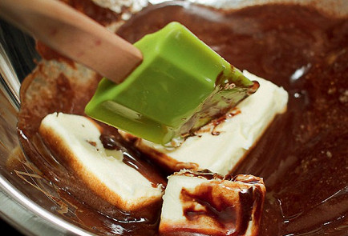

Брауни
ИНГРЕДИЕНТЫ(на 6 порций)
- Яйцо куриное-4 штуки
- Темный шоколад-100 г
- Сливочное масло-180 г
- Коричневый сахар-200 г
- Пшеничная мука-100г
- Грецкие орехи-100 г
.jpg)
.jpg)
.jpg)
Социальные сети:


ИНСТРУКЦИЯ ПРИГОТОВЛЕНИЯ
1. Шоколад разломать на кусочки и вместе со сливочным маслом растопить на водяной бане, не переставая все время помешивать лопаткой или деревянной ложкой. Получившийся густой шоколадный соус снять с водяной бани и оставить остывать.

2. Тем временем смешать яйца со ста граммами коричневого сахара: яйца разбить в отдельную миску и взбить, постепенно добавляя сахар. Взбивать можно при помощи миксера или вручную — как больше нравится, — но не меньше двух с половиной-трех минут.
.jpg)
3. Острым ножом на разделочной доске порубить грецкие орехи. Предварительно их можно поджарить на сухой сковороде до появления аромата, но это необязательная опция.
.jpg)
4. В остывший растопленный со сливочным маслом шоколад аккуратно добавить оставшийся сахар, затем муку и измельченные орехи и все хорошо перемешать венчиком.
.jpg)
5. Затем влить сахарно-яичную смесь и тщательно смешать с шоколадной массой. Цвет у теста должен получиться равномерным, без разводов.
.jpg)
6. Разогреть духовку до 200 градусов. Дно небольшой глубокой огнеупорной формы выстелить листом бумаги для выпечки или калькой. Перелить тесто в форму. Поставить в духовку и выпекать двадцать пять — тридцать минут до появления сахарной корочки.
.jpg)
7. Готовый пирог вытащить из духовки, дать остыть и нарезать на квадратики острым ножом или ножом для пиццы — так кусочки получатся особенно ровными.
.jpg)
8. Подавать брауни можно просто так, а можно посыпать сверху сахарной пудрой или разложить квадратики по тарелкам и украсить каждую порцию шариком ванильного мороженого.
.jpg)